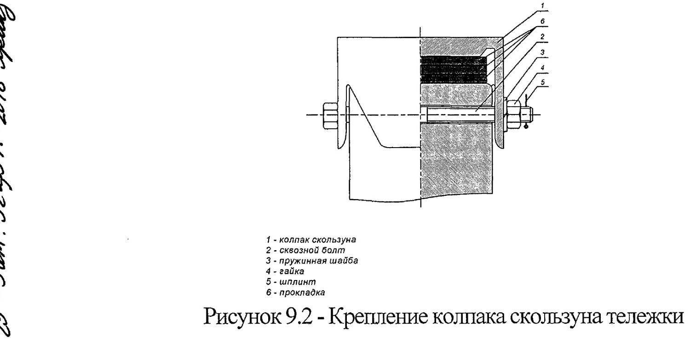
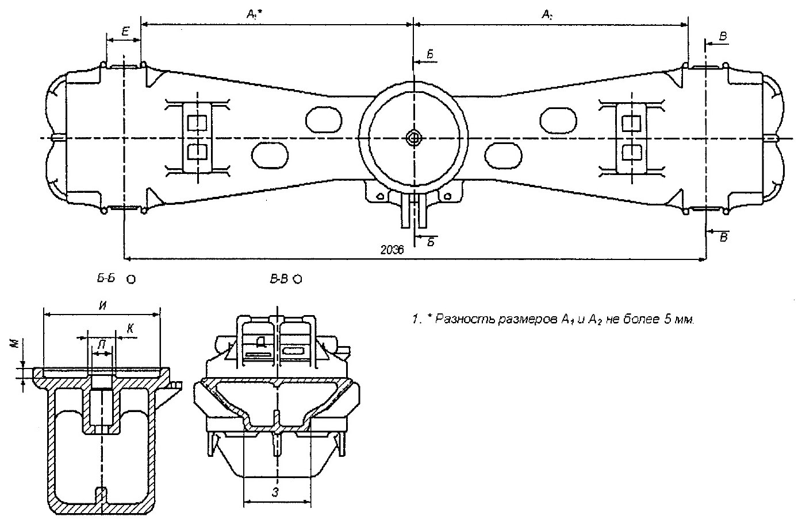

Nadressor balkasini ta'mirlash
9-bo'lim: ko'zdan kechirish, podpyatnikni ta'mirlash, qiya tekisliklar, skolzunlar va 9.1-jadval ta'mir o'lchamlari.
Ta'mirdan oldingi ko'zdan kechirish (9.1–9.2-bandlar)
Nadressor balkalari tozalanadi va yuviladi; podpyatnikning tayanch yuzasi moy qoldiqlari va zangdan tozalanadi. Ko'zdan kechirishda yuqori va pastki poyaslarning, vertikal devorlarning, podpyatnikning tayanch qismining butunligi, skolzun qalpoqlari uchun prilivlarning soz-holati va ishqalanuvchi yuzalarning yeyilishi aniqlanadi.
Balkaning ichki yuzasi yuqori va pastki poyasning texnologik oynalari orqali yoritib ko'riladi.

Podpyatnikni ta'mirlash (9.4-band)
Ta'mir hajmini aniqlagandan so'ng podpyatnikning barcha nuqsonlari bartaraf etilishi shart.
| Balka tayyorlangan vaqt | Podpyatnik chuqurligi «М» | Ta'mir tartibi |
|---|---|---|
| 1986 y.gacha | 25 (+1/−2) mm | Yeyilgan tayanch yuza, tashqi va ichki burtlar yeyilishga chidamli naplavka bilan 240…300 HB qattiqlikda tiklanadi, so'ngra stanokda chizma o'lchamigacha ishlov beriladi; tashqi burt ichki yuzasining konusligi 1:12,5 va 10 mm chuqurlikda diametri 302,5 (+1,5) mm ta'minlanadi |
| 1986 y.dan keyin | 30 (+1/−2) mm | Xuddi shunday naplavka; podpyatnik 36 (+1/−2) mm chuqurlikka rastochka qilinadi, konuslik 1:12,5 va 10 mm chuqurlikda diametri 302,5 (+1,5) mm ta'minlanadi; stanokda ishlangan yassi tayanch yuzaga М 1698.01.005 chizmasi bo'yicha diametri 298 (−1,3) mm prokladka faska pastga qaratib o'rnatiladi |
- Stanokda ishlashda tashqi burtning yassi tayanch yuza bilan tutashgan joyida 3…4 mm radiusli galtel ta'minlanishi shart. Galtelning yo'qligi ruxsat etilmaydi (9.4.6-band).
- Shkvoren teshigini ta'mirlashda ichki burt tiklanadi va Ст3 tipidagi po'latdan vtulka o'rnatilib, tashqi perimetr bo'yicha yaxlit chok bilan payvandlanadi (9.4.8-band).
- Ichki burt yoki vtulkaning yuqori qirrasi yassi tayanch yuzadan 5 (+1) mm balandlikda joylashishi kerak (podpyatnik chuqurligi 25 yoki 30 mm bo'lganda) yoki 11 (+1) mm (36 mm chuqurlikka rastochka qilinganda).
- Stanokka o'rnatishda bazaviy yuza sifatida balka ressor komplektlari prujinalariga tayanadigan tayanch yuzalar qabul qilinadi (9.4.9-band).
Qiya tekisliklarni ta'mirlash (9.5-band)
- Rejali ta'mirda qiya tekisliklarga ilgari payvandlangan plankalar olib tashlanadi.
- Plankalari olingan yoki yeyilgan qiya tekisliklar yeyilishga chidamli naplavka bilan, qattiqligi 240…300 HB ta'minlangan holda tiklanadi (ТИ-05-01-06/НБ yo'riqnomasi bo'yicha).
- So'ngra stanokda З ilovasidagi chizma o'lchamigacha ishlov beriladi.
Qiya tekisliklarning har qanday me'yordan ortiq yeyilishida (jumladan provallar va o'tuvchi yeyilishlarda) № 542 ПКБ ЦВ texnologik yo'riqnomasi bo'yicha plastina-vstavkalarni payvandlash usuli bilan ta'mirlashga ruxsat beriladi (9.5.3-band).
Barcha ta'mir turlarida ruxsat etiladi (9.5.5-band):
- cheklovchi burtlar bilan qiya tekislik orasidagi burchaklardagi yoriqlarni payvandlash (9-nuqson);
- yeyilgan burtlarni naplavka qilish — qolgan qalinlik 10 mm dan kam bo'lmaganda;
- upor qovurg'alarini naplavka qilish yoki payvandlab qo'yish (10-nuqson);
- cheklovchi burtlarga chiqmaydigan qiya tekislikdagi bo'ylama yoriqlarni payvandlash (8-nuqson).
Skolzunlarni ta'mirlash (9.6-band)

| Holat | Qaror |
|---|---|
| Skolzun qalpog'ining notekis maksimal yeyilishi 2 mm gacha, ДР | O'rnatishga ruxsat beriladi |
| Yeyilish 2 mm dan ortiq | Qalpoq yangisiga almashtiriladi |
| Qalpoqda yoriq yoki sinish bor | Brak qilinadi |
| Kapital ta'mir | Yangi qalpoqlar o'rnatiladi |
| Har xil chizmalar bo'yicha tayyorlangan qalpoqlar | Bitta aravachaga o'rnatish RUXSAT ETILMAYDI |
Skolzun qalpog'i uchun prilivning (tayanchning) stanokda ishlangandan keyingi balandligi nadressor balkasining pastki tekisligidan skolzunning yuqori tayanch yuzasigacha bo'lgan masofa bilan aniqlanadi va 315 (−6) mm bo'lishi kerak.
| Balka tayyorlangan vaqt | Priliv balandligi podpyatnik tayanch tekisligiga nisbatan |
|---|---|
| 1986 y.gacha | 76 (+2/−1) mm |
| 1986 y.dan keyin | 83 (+2/−1) mm * |
* — yeyilishga chidamli prokladkani hisobga olmagan holda.
9.1-jadval — nadressor balkasining ta'mir o'lchamlari
| Belgi | Depo ta'mirida (tiklanmasdan) | Kapital ta'mirda |
|---|---|---|
| Е — cheklovchi burtlar orasidagi masofa | 144,0 mm dan ko'p emas | 134 (+4) mm |
| З — qiya yuzalar (tayanch yuza) o'lchami | 166,0 mm dan kam emas | 175 ± 1 mm * |
| Л — shkvoren uchun teshik | Ø 60,0 mm dan ko'p emas | Ø 54 ± 2 mm ** |
| К — ichki burt | Ø 72,0 mm dan kam emas | Ø 77 (−0,74) mm |
* — 18-1750, 18-7055 modellari uchun 175 (+3/−1) mm; 18-9801, 18-100 uchun 175 (+4/−1) mm.
** — 18-9801 modeli uchun 54 (+2/−1) mm.

Shkvoren (9.7–9.9-bandlar)
- Barcha turdagi vagonlarning shkvoreni uzunligi 440 ± 3 mm bo'lishi kerak.
- Depo ta'mirida diametri bo'yicha 3 mm dan ortiq yeyilgan shkvorenlar naplavka bilan tiklanadi.
- Depo ta'mirida egilishi 5 mm dan ko'p bo'lmagan shkvorenlarni qizdirilgan holatda chizma o'lchamigacha to'g'rilashga ruxsat beriladi.
- Kapital ta'mirda mexanik shikast, egilish yoki yeyilishi bo'lgan shkvorenlar yangisiga almashtiriladi.
- «O'lik nuqta» derjavkasi kronshteynidagi Ø23 (+0,52) mm dan ortiq ishlangan teshiklarni naplavka qilishga ruxsat beriladi.
Nazorat savollari
Avval o'zingiz javob bering, so'ngra tekshiring.
1. Nadressor balkasi podpyatnigining ichki kolonkasidagi yoriq ta'mirlanadimi?
2. Podpyatnikdagi yoriqlarning umumiy uzunligi qancha bo'lishi mumkin va qanday shart bilan?
3. Podpyatnik tayanch yuzasining qolgan qalinligi kamida qancha bo'lishi kerak?
4. Qiya yuzalarning qolgan qalinligi qachon o'lchanadi?
5. Depo ta'mirida cheklovchi burtlar orasidagi masofa «Е» qanchadan oshsa naplavka qilinadi?
Manba: РД 32 ЦВ 052-2009 — ГОСТ 9246-2013 bo'yicha zazorli yon skolzunli tip 2 yuk vagon aravachalarini ta'mirlash. Umumiy ta'mir rahbariyati (2026-yil 1-iyuldan amaldagi tahrir).
Andijon vagon deposi · telejka ta'mirlash sexi.